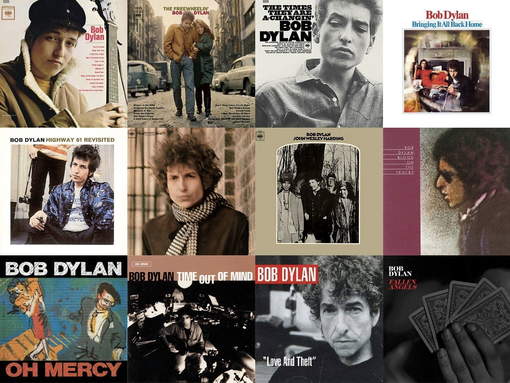

About
Bob Dylan (born Robert Allen Zimmerman, May 24, 1941) is an American singer-songwriter, author, and artist who has been an influential figure in popular music and culture for more than five decades. Much of his most celebrated work dates from the 1960s, when he became a reluctant "voice of a generation" with songs such as "Blowin' in the Wind" and "The Times They Are a-Changin'" which became anthems for the Civil Rights Movement and anti-war movement. In 1965, he controversially "went electric", branching out from his earlier work and alienating some fans of the American folk music revival, recording a six-minute single, "Like a Rolling Stone," which enlarged the scope of popular music.


